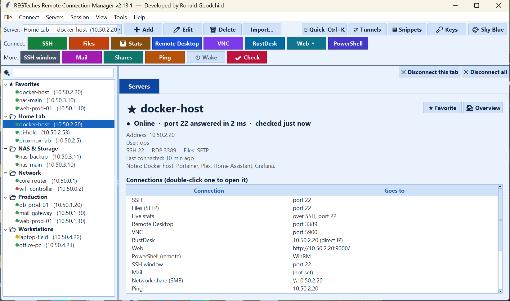
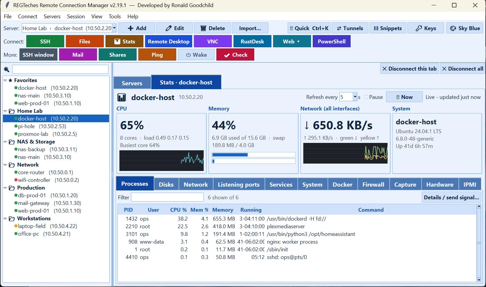
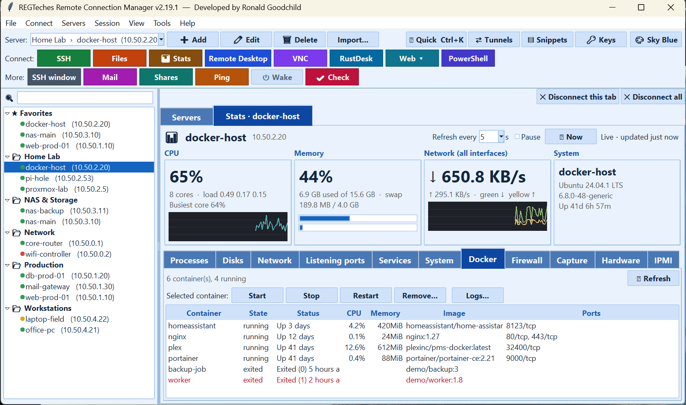
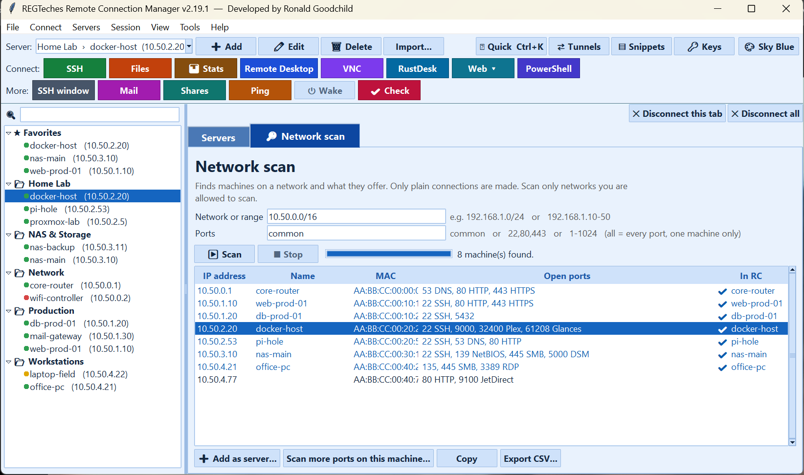

🔌 Ways to connect 16
- SSH terminal inside the window
- SSH in Windows' own console window
- File manager (in app)
- Live server stats
- Remote Desktop (RDP)
- VNC screen sharing
- RustDesk (by ID or IP address)
- Web console in your browser
- Remote PowerShell
- Telnet terminal
- Serial (COM port) terminal
- Webmail shortcut
- Open network shares in Explorer
- Ping
- Wake-on-LAN
- Several connections per server
🗂 Server list and Overview 14

- Add, edit, duplicate and delete servers
- Groups
- Search box
- Favorites
- Recently connected list
- Live status dots
- Overview home screen
- Not-answering list
- Default double-click action per server
- Verify settings before saving
- Check this server (DNS and service tests)
- Test login
- Server notes field
- Export server list to CSV
🖥 SSH terminal 18

- Full-screen programs (vim, htop, tmux)
- 256 and true colour
- Scrollback up to 50,000 lines
- Find in output
- Text zoom
- Automatic reconnect
- Keep-alive packets
- 8 built-in colour schemes
- Import colour schemes
- Choice of fixed-width font
- Copy on select
- Right-click and middle-click paste
- Multi-line paste check
- Log session to a file
- Timestamps in log files
- Save output to a file
- Line numbers
- Clear screen, keep scrollback
⚡ Speed and automation 9

- Ctrl+K quick connect
- Quick commands panel
- Command history
- Command suggestions (Ctrl+Space)
- Saved snippets
- Snippet groups
- Run a snippet on many servers
- After-login scripts
- Keyboard shortcuts
🧩 Tabs, split view and workspaces 12

- Tabbed sessions
- Split view with up to 9 terminals
- Grid, side-by-side and stacked layouts
- Pane zoom
- Broadcast typing to many terminals
- Saved workspaces
- Duplicate and rename sessions
- Lock tabs
- Drag to reorder tabs
- Close other, left or right tabs
- Move a tab into a split view
- Reopen last session's tabs
📼 Recording and notes 5

- Session recording (asciicast)
- Recording player with speed and seek
- Markdown notes
- Note tags and search
- Notes attached to servers
📁 File manager 24

- Two-pane layout
- SFTP
- FTP and FTPS
- WebDAV (Nextcloud, NAS)
- S3-compatible storage
- Drag and drop
- Transfer queue with progress
- Pause, resume and retry transfers
- Overwrite rules
- Keeps file timestamps
- Folder synchronise with preview
- Built-in editor
- Open in a Windows program with auto-upload
- Copy, cut and paste on the server
- New file, folder and rename
- Change permissions
- Symbolic links
- Clickable path trail
- Sortable and choosable columns
- Type-ahead and filter boxes
- Hidden files switch
- Folder bookmarks
- Type a path into the terminal
- Zmodem upload and download (rz / sz)
📊 Monitoring 12

- CPU graph and load
- Memory and swap
- Network speed graph
- Disk usage warnings
- Process list with filter
- Process details and signals
- Listening ports
- systemd services: start, stop, enable
- Service logs
- System information and clock check
- Glances support (including Windows PCs)
- Selectable refresh interval
🛠 Server administration 12

- Docker container list
- Start, stop, restart and remove containers
- Container logs
- Temperatures and fans
- SMART disk health
- IPMI sensors, event log and chassis
- ufw firewall rules
- firewalld ports and services
- View nftables and iptables
- Lock-out warnings before firewall changes
- Live packet capture (tcpdump)
- Save captures as .pcap for Wireshark
🌐 Network tools 12

- Network scan
- Deep scan of all 65,535 ports
- Machine names and MAC addresses
- Add a found machine as a server
- Export scan results to CSV
- SSH tunnels: local, remote and dynamic
- SOCKS5 and HTTP proxies
- Jump servers
- Alternate addresses (LAN and VPN)
- Temporary TFTP server
- Temporary HTTP file server
- List serial ports
🔑 Logins and security 9

- Saved passwords encrypted by Windows
- Reusable identities
- SSH key files and SSH agent
- One-click key login for a server
- Keys for all servers at once
- Authenticator (TOTP) two-step logins
- Trusted host key checks
- Host key manager
- Forget all saved passwords
💾 Moving, backup and sync 10

- Encrypted backup and restore
- Encrypted sync between PCs
- Automatic sync at start and exit
- Import from PuTTY
- Import from WinSCP
- Import from ssh config
- Import from MobaXterm
- Import from Xshell
- Import from Devolutions RDM
- Import from CSV or text
🎨 Look, help and upkeep 9

- Seven colour themes
- Interface size 80% to 200%
- Preferences page
- Web manual with video
- Built-in quick start guide
- Activity log with slow-step timing
- Damaged settings are set aside, not overwritten
- Portable: no installer needed
- Free and open source (MIT)